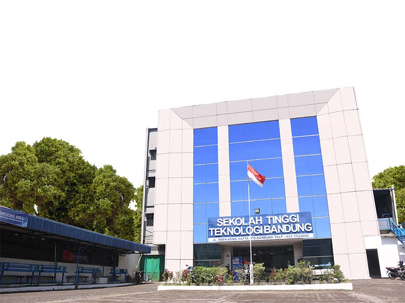

Panggillan dari hati? Saya memilih Universitas Teknologi Bandung (UTB) bukan hanya karena panggilan hati saja. Beberapa pertimbangan biaya yang sangat terjangkau dibandingkan dengan kampus-kampus swasta lainnya di Bandung. Namun tetap menawarkan kualitas yang baik. UTB telah terakreditasi B bukan C dan itu menjadi faktor utama saya. Pada saat saya mendaftar kampus ini masih berstatus Sekolah Tinggi Teknologi Bandung (STTB), dan sekarang telah berkembang menjadi Universitas Teknologi Bandung (UTB). Meskipun lokasinya berada di pinggiran dan tidak dekat dengan kampus-kampus lain, hal ini tidak menjadi masalah bagi saya. Yang terpenting adalah UTB menawarkan pendidikan berkualitas dengan biaya yang terjangkau.
Selain itu, saya memilih untuk mendaftar di Universitas Teknologi Bandung (UTB) karena misi universitas ini sejalan dengan visi pribadi saya, yaitu menyelenggarakan layanan pengabdian masyarakat di bidang teknologi. Saya memiliki minat yang kuat untuk bekerja di instansi pemerintahan setelah lulus, dan saya yakin bahwa pendidikan di UTB akan memberikan saya pengetahuan dan keterampilan yang diperlukan untuk mencapai tujuan tersebut..
